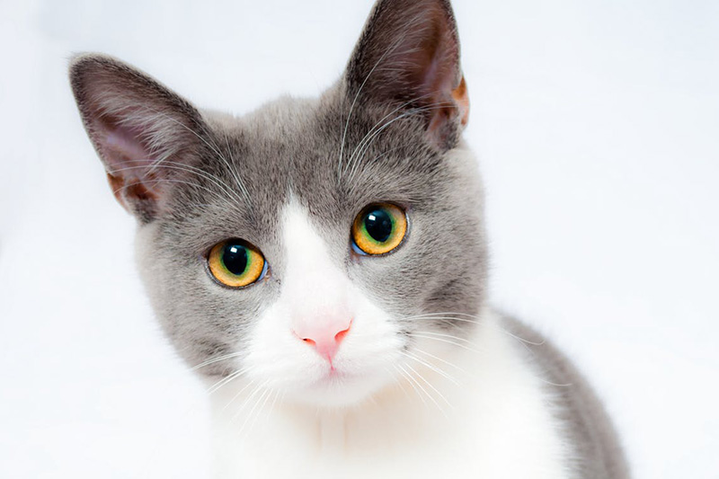
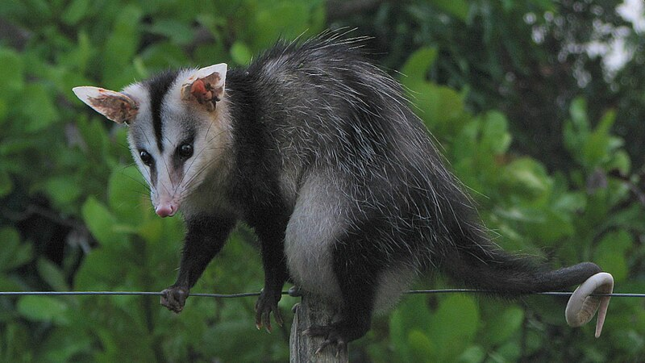

A fauna, um reino vasto e diversificado de seres vivos, é uma manifestação extraordinária da riqueza natural que habita nosso planeta. Este reino abriga desde os majestosos grandes felinos que percorrem savanas até os minúsculos insetos que desempenham papéis essenciais nos ecossistemas. A importância da diversidade de animais transcende sua mera presença; ela é a base de uma teia intricada que sustenta a vida em todas as suas formas.
Cada espécie, com suas características únicas, contribui para o equilíbrio ambiental de maneiras essenciais. Seja na polinização de plantas, no controle de populações de outras espécies ou na ciclagem de nutrientes, a fauna desempenha papéis interconectados que mantêm a harmonia nos ecossistemas. A diversidade de animais é, portanto, um pilar fundamental para a estabilidade e resiliência dos ambientes naturais.
Além de seu papel ecológico, a fauna enriquece nossas vidas de maneiras incontáveis. Sua variedade espetacular é fonte de admiração e inspiração, e muitos animais desempenham papéis culturais e simbólicos em diversas sociedades ao redor do mundo. A beleza das borboletas, a majestade dos elefantes e a agilidade dos golfinhos são apenas alguns exemplos do espetáculo que a diversidade da fauna oferece.
A fauna pode ser dividida em quatro grandes grupos: animais silvestres, exóticos, domésticos e sinantrópicos:

Fauna doméstica – engloba animais que, através de processos tradicionais e sistematizados de manejo e melhoramento zootécnico tornaram-se domésticos, possuindo características biológicas e comportamentais em estreita dependência do homem, podendo inclusive apresentar aparência diferente da espécie silvestre que os originou. Nessa classificação se encontram tanto os animais de estimação como o gato, o cachorro, o canário-belga, o periquito-australiano, a calopsita…, quanto animais desportivos ou de produção como o cavalo, a vaca, o búfalo, o porco, a tilápia, a abelha, o bicho-da-seda, a galinha e a codorna-chinesa, entre outros. 
A fauna sinantrópica inclui espécies que compartilham recursos (água, abrigo e alimento) de áreas habitadas pelo homem para sobreviver. Podem ser nocivos, quando interagem de forma negativa com os seres humanos, transmitindo doenças e gerando prejuízos, como os pombos-domésticos, urubus, ratos, baratas, escorpiões, cupins, mosquitos e moscas. Também há espécies de animais silvestres que, devido a alguns comportamentos, ao conviverem em ambientes urbanos, podem provocar situações inconvenientes para as pessoas, como acontece com gambás, sabiás-laranjeira e maritacas. 